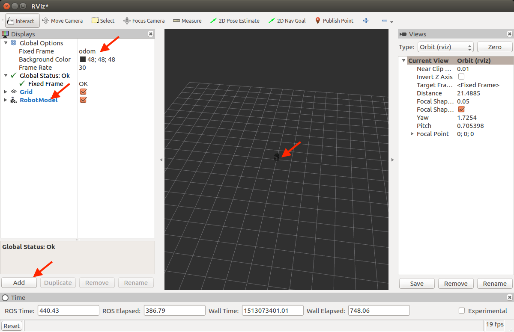
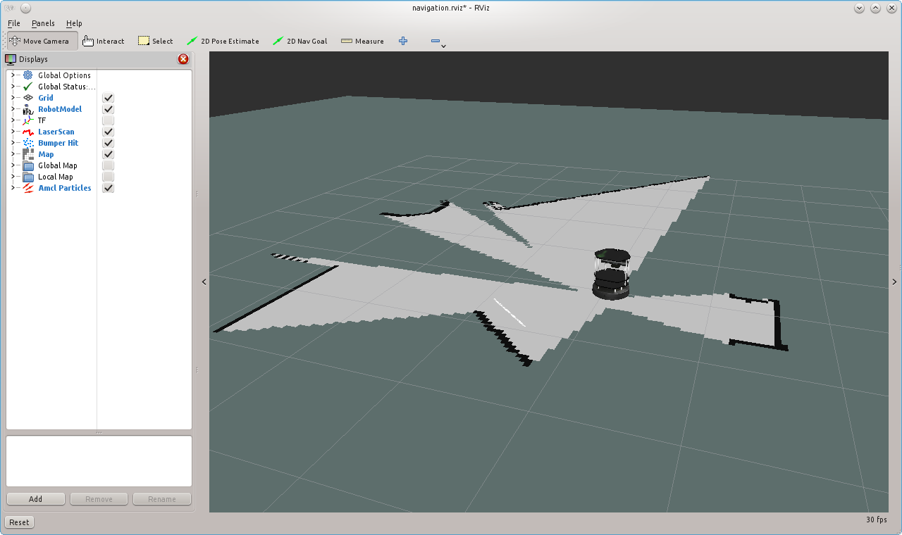

ROS Navigation¶
Introduction¶
In this tutorial you will learn how to program a mobile robot using ROS to navigate from point A to point B autonomously while avoiding obstacles.
You will learn by doing. Specifically, in each of the three main topics in this tutorial, you will follow the following steps.
- Running a complete example. First, for each topic, you will run a set of available ROS programs to perform the tasks discussed in this tutorial in order to get familiar with the tools.
- Analyze examples. Next, we will dig deeper into the examples and understand how it works.
- Do exercises. To make sure that you understand and enforce the concepts you learned, a set of exercises are provided for you to solve. Solutions for those exercises are available. However,
Important
You will only learn the concepts mentioned here by practicing. Remember to practice, practice, and practice ….
In this tutorial, you will work with a simulated robot called TurtleBot in the Gazebo simulator.
Prerequisites¶
This tutorial assumes the following.
- You are familiar with ROS basics e.g. topics, services, actions, how to write ROS nodes in Python, and ROS command line tools
- ROS Kinetic (Desktop-Full install) is installed on Ubuntu 16.04 LTS http://wiki.ros.org/kinetic/Installation/Ubuntu
- Gazebo 7. Comes by default with ROS Kinetic
- A good PC. Recommended i5 with minimum of 8GB RAM
- Basic programing in Python
Topics Covered¶
For a robot to navigate autonomously it needs the following.
- A map of the world or the environment of interest. You will learn how to create a map using laser scans and 2D SLAM ROS programs that are already available. You will also know how use a map that is already available. The ROS package that will be used for mapping is called
gmapping
{kind=link}
- Localization. A robot needs to know where it is inside the map in order to know how to go to a goal location. You will learn how to use a localization algorithm already implemented in ROS to help the robot estimate its location in a given map based on 2D laser scans. The ROS package that will be used for localization is called AMCL, Adaptive Monte Carlo Localization.

- Path planing. This is the process of generating a sequence of points (path) between a start point and a goal point.
- Path following. This is the process of following the path that is planned while avoiding obstacles. The ROS package that will be used here for navigation is called move_base
{kind=link}
In all the tutorials, you will be using Rviz which is a very powerful ROS tool for visualizing the status of your robot, sensor information, map building, navigation, and debugging.
Environment Setup¶
During this tutorial, you will work with a simulated robot called TurtleBot, to apply the concepts of navigation using ROS. The following image is a picture of the robot you will work with. It is a differential drive robot, that has a Kinect sensor for environmental mapping, wheel encoders for pose estimation.

Install TurtleBot packages¶
sudo apt-get install ros-kinetic-turtlebot ros-kinetic-turtlebot-apps ros-kinetic-turtlebot-interactions ros-kinetic-turtlebot-simulator ros-kinetic-turtlebot-gazebo -y
After installation is done, check that the simulation works in Gazebo. Execute the following commands in a shell terminal.
roslaunch turtlebot_gazebo turtlebot_world.launch
Attention
It might take long time if you are opening the previous Gazebo world for the first time. Just be patient.
You should get something similar to the following.

Tele-operating the Robot¶
You will need to move the robot around somehow in order to build a map of the world in the coming sections. You can move it using a keyboard or a joystick.
turtlebot_teleop package provides nodes and launch file to move the robot by either a keyboard or a joystick. There is one launch file for keyboard teleoperation and three launch files for three different joysticks. To navigate to the launch file folder, execute the following.
roscd turtlebot_teleop/launch
To move the robot using a keyboard, execute the corresponding launch file in a separate terminal, after you launch the TurtleBot’s world.
roslaunch turtlebot_teleop keyboard_teleop.launch
Use the keys as mentioned on the screen to move the robot.
To move the robot using a joystick (we will assume Logitech F710 joystick), execute the following.
roslaunch turtlebot_teleop logitech.launch
Hint
You you will need to press certain button combination in order to control the robot with the joystick. Read the instruction in the logitech.launch file.
Important
Make sure that your joystick is given the required privileges. Use sudo chmod a+rw /dev/input/jsX (X is the device number) to give the required privileges to your joystick.
Rviz¶
Rviz (ROS visualization) is a 3D visualizer for displaying sensor data and state information from ROS.
We will be using Rviz all the way in this tutorial. Now, let’s see how we can show simple things in Rviz.
Running Rviz. Make sure that you launched a turtlebot world. Next, in a separate terminal, run rviz using the following command.
rosrun rviz rviz
Adding displays. Next, we will need to add the information that we would like to visualize. This is called Displays. On the left side of Rviz, there is a column called Displays. The first thing we need to adjust is the Fixed frame field. Choose the odom frame. This is the frame that is created at the initial point of the robot when you launched your turtlebot world, then it becomes fixed for the rest of the simulation. It’s called local fixed frame.
Adding Robot Model. To show the robot 3D model, we will need to add a display for that. Click on the Add button in the lower left corner of the Displays column. Then, choose RobotModel. You should see the robot model in the middle screen.
{kind=link}
Adding a display for laser scans. To show what the laser scanner detects on the robots, you can add a LaserScan display. After adding the display, you will need to specify the topic that has the laser scans reading. In this case it is called /scan
See following snapshots to know what to expect your rviz configs to be like.


Now, you have a basic idea on how to use Rviz to visualize your robots states. Later, we will also use it to visualize the map we built or while we are building it, paths we want to navigate, and how to use it to set goal waypoints.
Hint
If you close Rviz, you will loose the displays and the configs you made. You can save the current configs you did in order to load it quickly next time you launch Rviz. Just use the File menu and choose save config as.
Now it’s time to build a map!
Mapping¶
The first step we need to do in order to be able to perform autonomous navigation is to build a map.
In this tutorial we will learn how to create a 2D map with a ROS package called gmapping. Here is the definition of the package according to the official WiKi (http://wiki.ros.org/gmapping)
> The gmapping package provides laser-based SLAM (Simultaneous Localization and Mapping), as a ROS node called slam_gmapping. Using slam_gmapping, you can create a 2-D occupancy grid map (like a building floorplan) from laser and pose data collected by a mobile robot.
Although there are other packages that allow to build 3D maps, but we will only stick to 2D mapping in this tutorial.
If you are curious, there is a nice package called octomap for 3D mapping (http://wiki.ros.org/octomap).
So basically, we will be performing 2D SLAM in order to construct a 2D map of a certain environment. To do that, as mentioned, we will use gmapping package. This package takes laser scans and robot odometry and outputs a map expressed as occupancy grid. Wait! What is occupancy grid? don’t worry, we will get to that soon.
To start, we will see how to use mapping through an example.
Building 2D map using gmapping package¶
First let’s bring up our Gazebo world.
roslaunch turtlebot_gazebo turtlebot_world.launch
The playground world with a TurtleBot2 looks like this:

Hint
You can launch another world using command
roslaunch turtlebot_gazebo turtlebot_world.launch world_file:=worlds/willowgarage.world
To start building a map, let’s run the gmapping node.
roslaunch turtlebot_gazebo gmapping_demo.launch
Next, run Rviz in order to visualize the map you build in real-time.
rosrun rviz rviz
Add the following displays:
RobotModelLaserScanMap
In order to visualize the robot, laser scans, and the map.
Use your favorite teleoperation tool to drive the TurtleBot around the world, until you get satisfied with your map. The following capture shows the mapping process after turning 360 degrees.
For example, to use the keyboard to drive the robot, launch the corresponding launch file as you did before in the Tele-operating the Robot section.
roslaunch turtlebot_teleop keyboard_teleop.launch
Start driving the robot using keyboard keys and observe how the map is updated in Rviz.
{kind=link}
Once you get satisfied about your map, you can save it for later use. To save the map execute the following command inside the folder you would like to save the map inside.
rosrun map_server map_saver -f <your map name>
Your saved map is represented by two files.
- YAML file which contains descriptions about your map setup
- grayscale image that represents your occupancy grid map, which actually can be edited by an image editor
OK! What has just happened ?! Let’s look closely into the gmapping_demo.launch file and see what it does.
Analyzing gmapping_demo.launch¶
Localization¶
Path Planning/Following¶
Mini Project¶
Conclusion¶
References¶
Contributors¶
Main contributor is Mohamed Abdelkader.